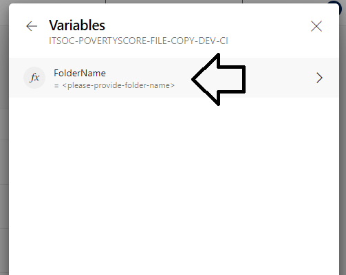
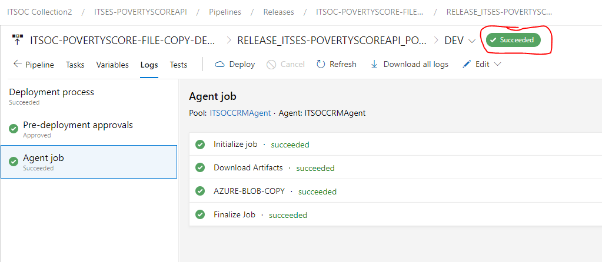

13 Deploying to Azure
The Azure DevOps site for PIP currently consists of two repos:
ITSES-POVERTYSCORE (docker file repo)
ITSES-POVERTYSCORE-DATA (data repo)
Each repo consists of three branches:
DEV
QA
PROD
The PIP Technical Team will handle deployments to DEV and QA, while ITS needs to approve deployments to Production.
13.1 Poverty Calculator Data
Note: The Azure Data repo has now been directly synced with pipeline outputs folder on the PIP network drive. There is thus no longer any need to push changes from your local computer.
13.1.1 Deploying data on DEV
Deploying the data to DEV consists of four main stages:
Sync local data to remote Git repository on TFS
Run the Continuous Integration pipeline (CI)
Run the Continuous Deployment pipeline (CD) to move the data to Azure blob storage
Data is moved to the Virtual Machine (VM) running the API This stage is completed automatically every 30 minutes (as of 11/02/2021)
You can deploy data to DEV by following the steps below:
13.1.1.1 Sync data to remote repo on TFS
Step 1: Sync you local DEV branch with the remote.
Step 2: Commit and push any data changes to the remote.
13.1.1.2 Run CI pipeline
Step 3: Nagivate to the Azure DevOps Data repo. Click on Pipelines.

Step 4: Select the FILE-COPY-DEV-CI pipeline.

Step 5: Click on Run pipeline.
Step 6: Click on Variables -> FolderName, and add the name of the folder which should be copied to the Cloud Blob Store.
Note: This step is likely to change when the Data pipeline is re-written to handle mulitiple data version folders.


Step 7: Click on Run.

Step 8: View the new build.

13.1.1.3 Run CD pipeline
Step 9: Click on Releases and select the FILE-COPY-DEV-CD release. Approve the pending request.


Step 10: Verify that the build completed.

13.1.1.4 Move data to VM
Step 11: Wait for the data on the VM to be updated. There is an automatic cron job that runs behind the scenes to copy the data from the blob storage to the VM. This runs at regular intervals, every 30 (?) minutes. You can use the /data-timestamp endpoint to verify that the transfer has completed. For additional information you can also use the /dir-info endpoint.
13.1.1.5 Restart the Docker container
Step 12: Restart the Docker container by running the RESTARTCONTAINER-DEV-CD release pipeline.
13.1.1.6 Clear the VM cache
Step 13: If you conducted a data update that includes changes to survey data or the estimation tables for an already existing version folder you will need to clear the cache on the VM. Use the specific API endpoints for cache handling to do this. Note: If in doubt always clear the cache.
13.1.2 Deploying data on QA
Step 1: Nagivate to the Azure DevOps Data repo.
Step 2: Click on Create pull request. Select from DEV to QA.
Step 3: Go through the steps to commit and approve the pull request. Please make sure that the “Delete source branch” box is NOT checked, ie. don’t delete the DEV branch. (This default should be modified going forward)
Step 5: Go to Pipelines -> Pipelines and select the FILE-COPY-QA-CI pipeline. Verify that the pipeline is building. If it wasn’t triggered you will need to trigger it manually.
Step 6: Go to Pipelines -> Releases and select the FILE-COPY-QA-CD release. Approve the request, and verify that the build completes.
Step 7: Run the RESTARTCONTAINER-QA-CD release pipeline after the data transfer to the VMs has completed.
Step 8: Clear the cache on the VMs if needed. Note: If in doubt always clear the cache.
13.1.3 Deploying data to Production
Step 1: Nagivate to the Azure DevOps Data repo.
Step 2: Click on Create pull request. Select from QA to PROD.
Step 3: Go through the steps to commit and approve the pull request. Please make sure that the “Delete source branch” box is unchecked, ie. don’t delete the QA branch.
Step 5: Go to Pipelines -> Pipelines and select the FILE-COPY-PROD-CI pipeline. Verify that the pipeline is building. If it wasn’t triggered you will need to trigger it manually.
Step 6: Go to Pipelines -> Releases and select the FILE-COPY-QA-CD release. Wait for ITS to approve the request, and then verify that the build completes.
Step 7: Run the RESTARTCONTAINER-PROD-CD release pipeline after the data transfer to the VMs has completed.
Step 8: Clear the cache on the VMs.
13.2 Poverty Calculator Docker image
Before you start with the application deployment process you will need to clone the Azure DevOps Docker repo (DEV branch) to your local machine. You will only need to do this once. After that you can follow the step by step guide below.
Please note that it is important that data changes are pushed through and released before deploying the Docker image. This is because the Docker container will need to restart in order to pick up changes in the mounted folder or volume. The best way to do this is to deploy the data, and then use the API restart pipeline to ensure a restart of the Docker container.
13.2.1 Deploying image on DEV
Step 1: Verify that the latest code in the master branches of {wbpip} and {pipapi} works with the latest data on DEV. This can be done by running the {pipapi} package in a local RStudio session.
Step 2: \[Optional\] Verify that the most recent Dockerfile builds on your local machine. This is certainly something that should be done if the contents of the Dockerfile has changed, or before major releases. But in a continuous workflow where you know that Dockerfile hasn’t changed, it might be sufficient to verify that the R packages in question are working.
Step 3: Navigate to the Azure DevOps Docker repo. Go Pipelines -> Pipelines. Trigger the CONTAINER-DEV-CI pipeline, either by
a) Pushing an updated Dockerfile to the remote repo or
b) Running the Pipeline manually.
Step 4: Go to the Pipelines -> Releases, and select “Create release” in order to run a new deployment. View the logs to see results from the image build and security scan.
Step 5:. Visit the DEV API website for further testing.
13.2.2 Deploying image on QA
Step 1: Check that the DEV deployment is working correctly.
Step 2: Make sure the data on QA is up-to-date (in sync with DEV). If it isn’t you will need to create a PR and merge the data first.
Step 3: Create a pull request from DEV to QA. Go through the steps to commit and approve the pull request. Please make sure that the “Delete source branch” box is NOT checked, ie. don’t delete the DEV branch.
Step 4: Go to the Release pipeline to see results from the image build and security scan.
Step 5: Visit the QA API website for further testing.
13.2.3 Deploying image to Production
Step 1: Check that the QA deployment is working correctly.
Step 2: Make sure the data on PROD is up-to-date (in sync with QA). If it isn’t you will need to create a PR and merge the data first.
Step 3: Create a pull request from QA to PROD. Go through the steps to commit and approve the pull request. Please make sure that the “Delete source branch” box is NOT checked, ie. don’t delete the QA branch.
Step 4: Go to the Release pipeline to see results from the image build and security scan.
Step 5: Visit the PROD API website for further testing.